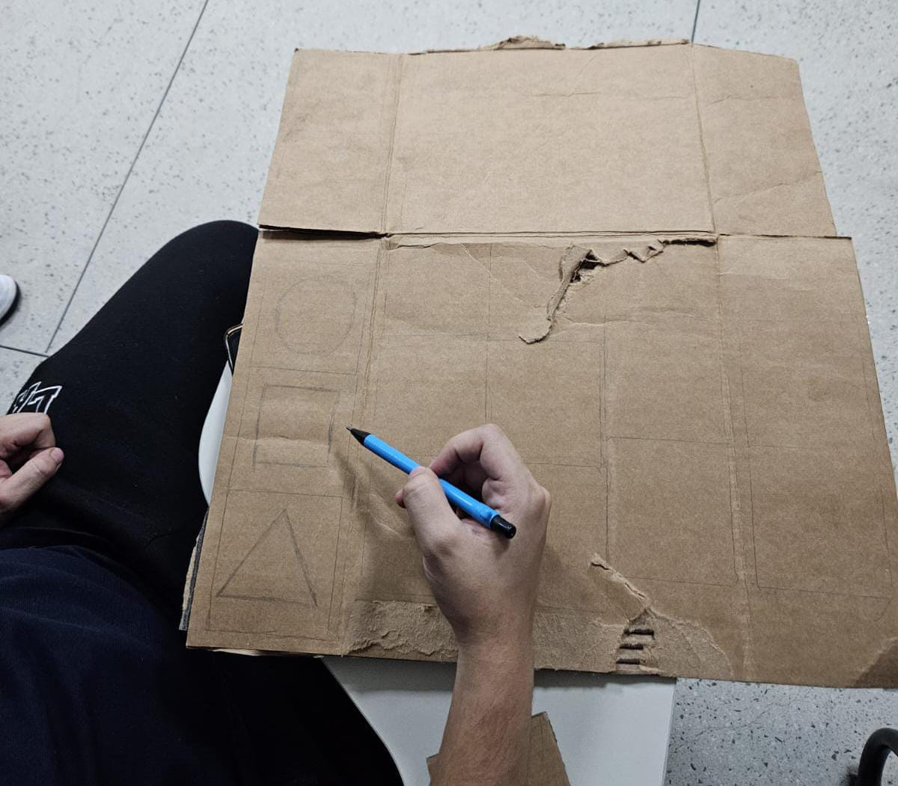
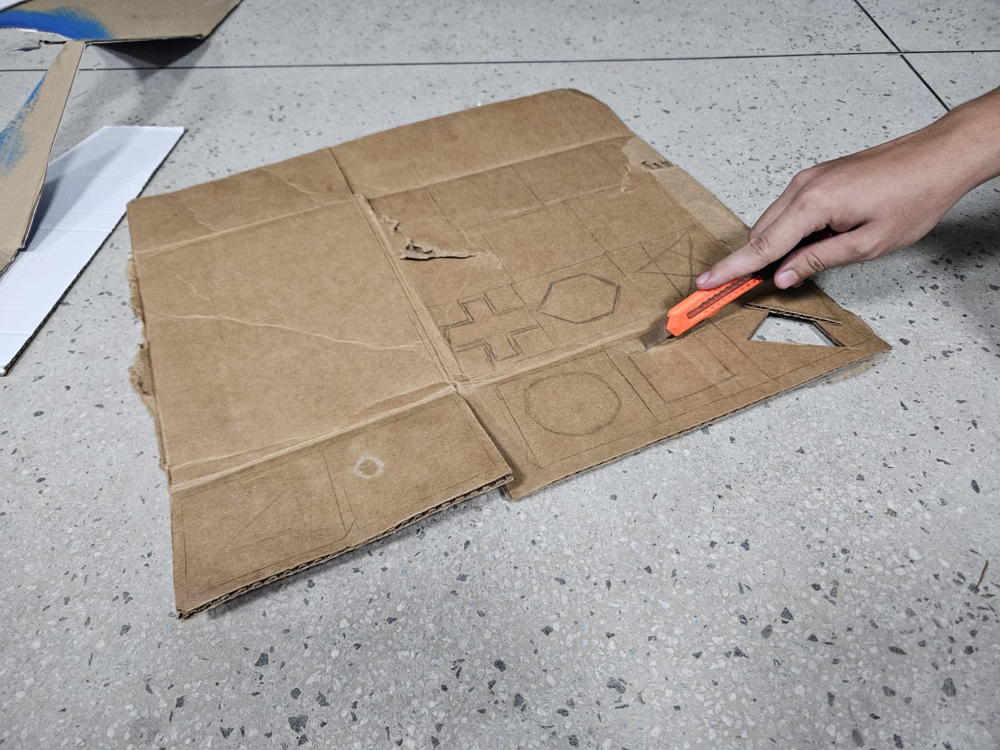
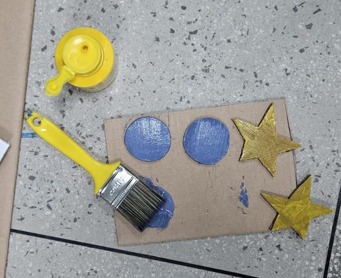
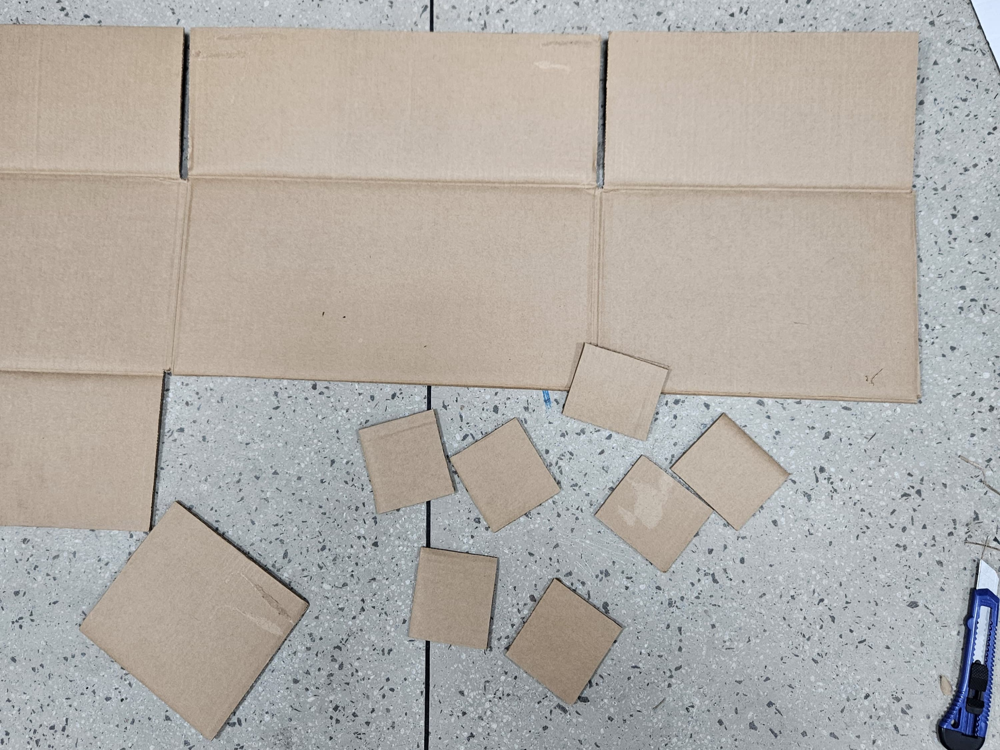
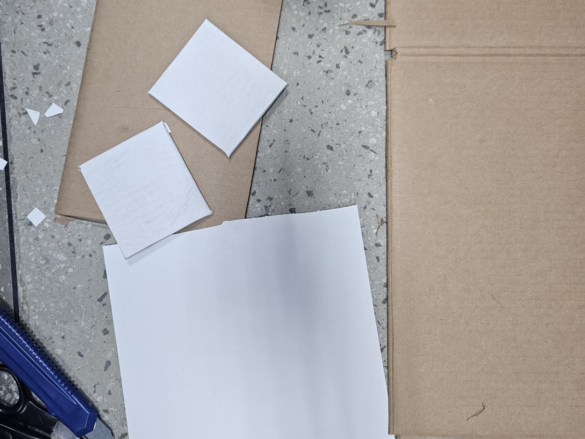

Pincéis para o uso de Tinta Guache e aplicação da cola;
Lápis Grafite (para desenhar as formas geométricas ou outro formato de sua preferência);
Tintas Guache de sua preferência(utilizamos as 4 cores primárias e a partir delas, criamos outras cores);
Cola Branca.
Como fazer?
Utilize um quadrado médio de papelão e desenhe com o lápis grafite sobre o papelão um par das formas de sua preferência, como na imagem abaixo

Após esse processo, corte as formas com uma tesoura ou estilete de sua preferência.

Após cortar as formas, pinte-as com a cor de sua preferência.

Deixe a tinta das formas secarem e enquanto isso, em outro quadrado médio de papelão, corte com uma tesoura ou estilete de sua preferência o mesmo número de pares em forma de quadrado. Esses quadrados serão a base para o jogo da memória.

Após cortar os quadrados, revista ambos os lados com uma folha ofício A4 branca cortada com a tesoura do tamanho adequado e o auxílio da cola branca para fixá-la no papelão, Para melhor aplicação da cola, utilize um pincel de sua preferência para utilizar a quantidade correta sem desperdício.

Após a base do jogo da memória secar, cole as formas sobre a base com o auxílio de um pincel com cola branca e logo em seguida, você obterá o seguinte resultado: